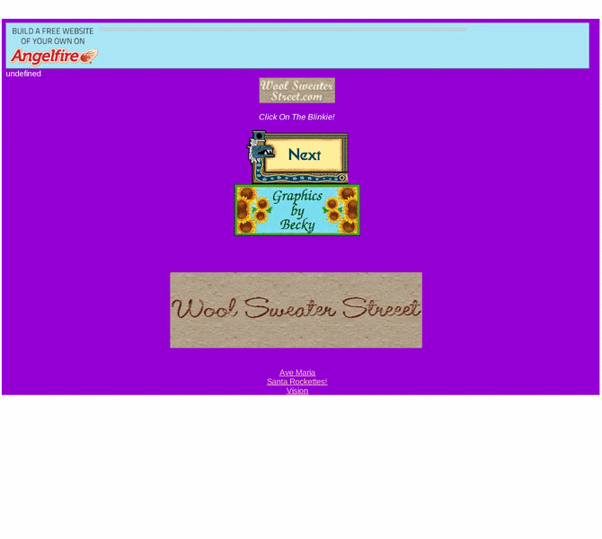

Previewing: bearybipolar.com: manic-depressive diary Previewing: bearybipolar.com: manic-depressive diary 
Use the left/right red arrow controls to navigate through this ring - Click the preview image to visit the member site.

bipolar diary of my moods and memories written mostly in stream of consciousness mode. family photos, poetry, and kitty pages. links to inspirational, friendship, and humor pages that i have created.
bearybipolar.com: manic-depressive diary owned by:
 byanymeasure byanymeasure
A member of the original webring since 04/20/2011.
|
|